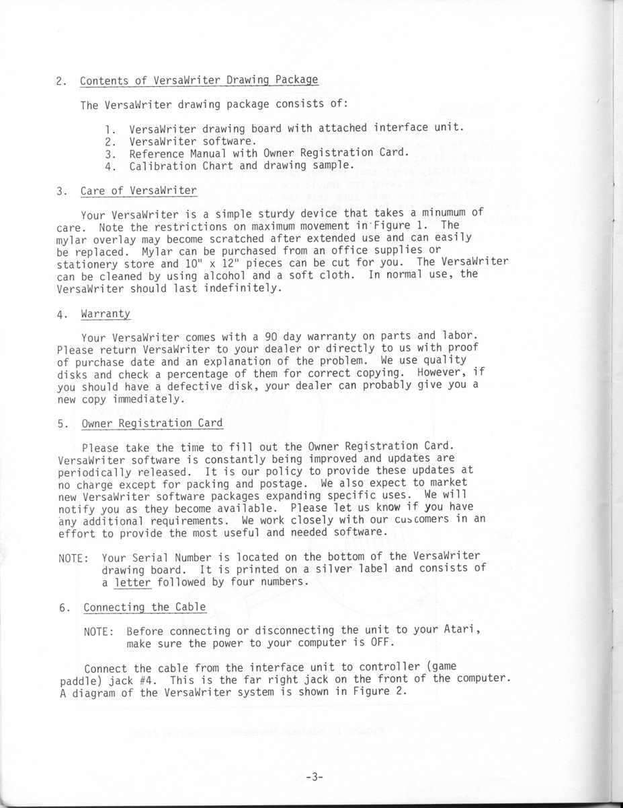
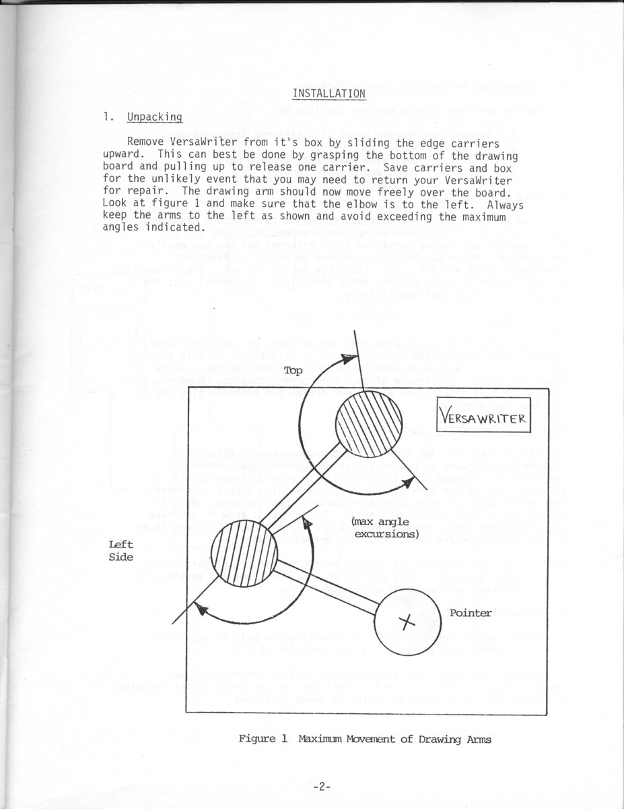

VersaWriter
A drafting-pantograph drawing tablet: trace a picture under Mylar and twin potentiometers turn arm angles into vector art

Overview
The VersaWriter (introduced c. 1981) is a digitizer drawing board and software system that let a home-computer user enter graphics by tracing. It is a drafting pantograph scaled for the living room: a fixed pivot holds a 6-inch arm ending in a second pivot holding another 6-inch arm whose tip is a clear lens with a small opaque dot. Two internal rotary potentiometers, one per pivot, convert the two arm angles into X/Y coordinates that the computer replots on the high-resolution graphics screen.
The system sold at about $299 and shipped for the Atari 400/800, Apple II, and Commodore 64 (distributed for the Apple II by Human Engineered Software and for Atari/Commodore by Suncom). The reference manual describes a useful drawing area of 8 by 12.5 inches, claims the digitizer exceeds the accuracy of the high-res screen at 30 thousandths of an inch, and a digitizing rate designed to meet the needs of a human operator at 30 thousandths of a second.
### Trace under the glass
The interaction model is purely physical-trace-to-vector. The user places an original drawing, chart, or diagram under a transparent Mylar sheet, then moves the pointer over the original. Software, invoked by one-letter mnemonic commands, replots the stroke live with tools for straight lines, freehand brush, airbrush, color fill, scaling from 0.25x to 4x, smoothing, and text. A one-time calibration records four known arm positions so the software can map arm angles to cursor position before use.
### The inverse of a plotter
Where a plotter takes abstract coordinates and makes them physical on paper, the VersaWriter runs the same two-axis linkage backward: physical movement of a human hand becomes coordinates the machine displays. It is the embodied mirror image of the Commodore 1520 plotter already in the museum — creation by tracing rather than drawing by pen movement. A 1993 Atari Classics retrospective explicitly asked, "Should VersaWriter be in a museum?"
Deep dive
Team & pioneers
- Versa Computing, Inc. Maker, Newbury Park, CA.
Media
